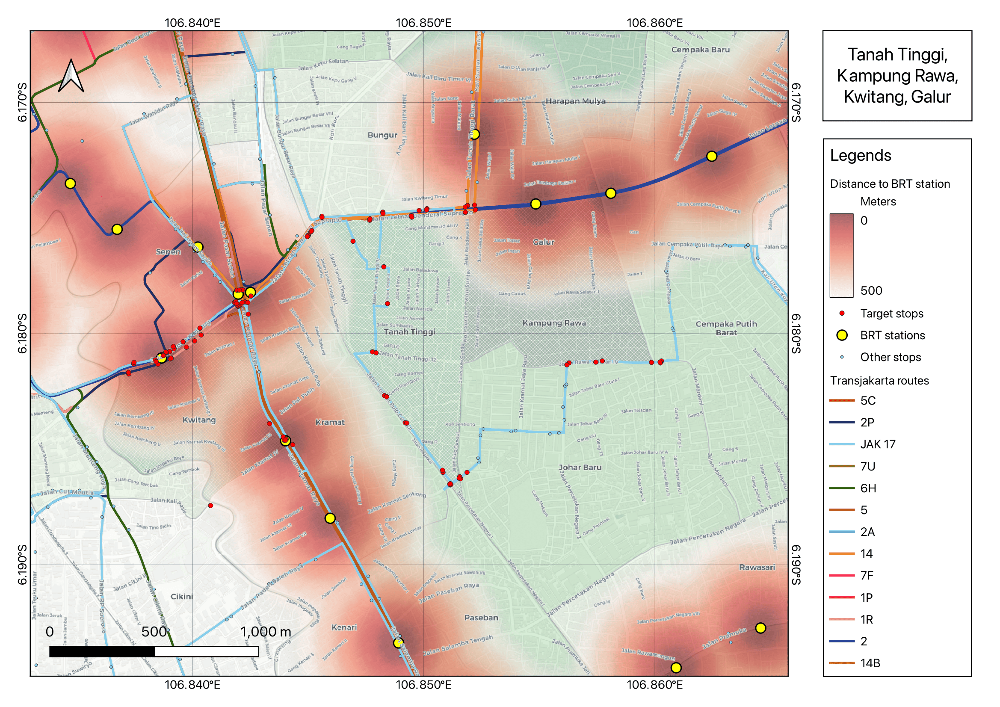
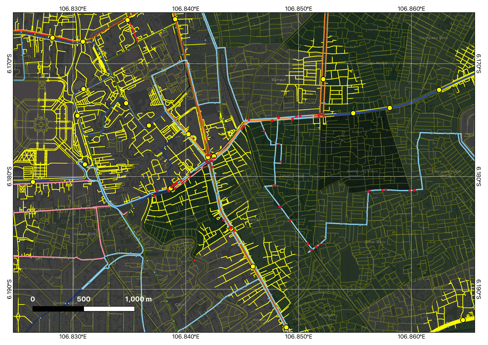
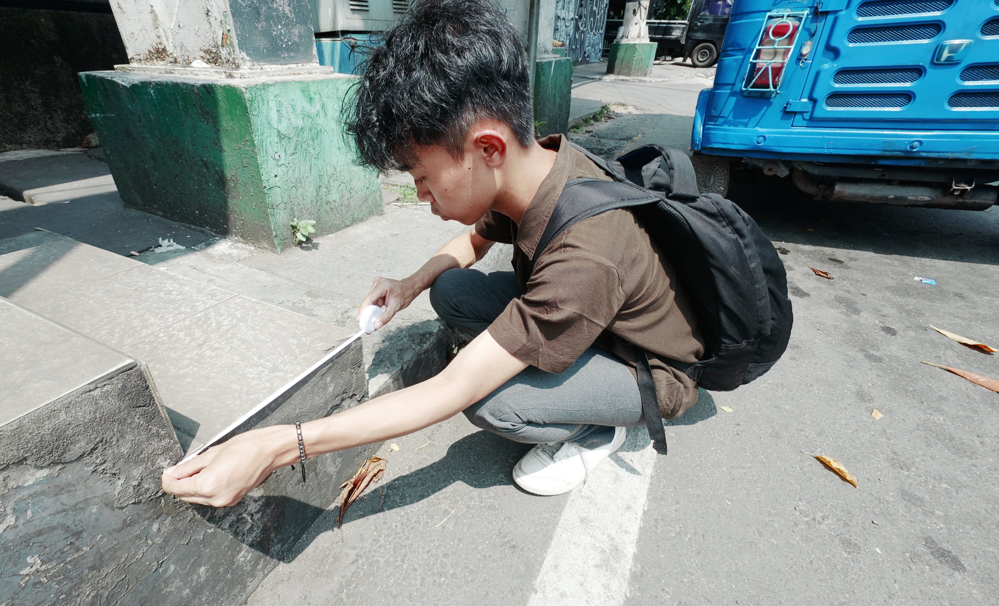
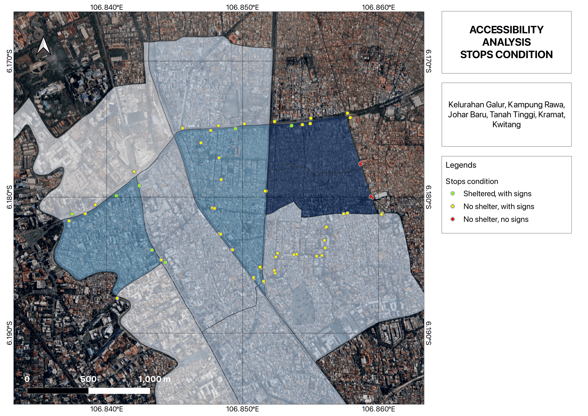
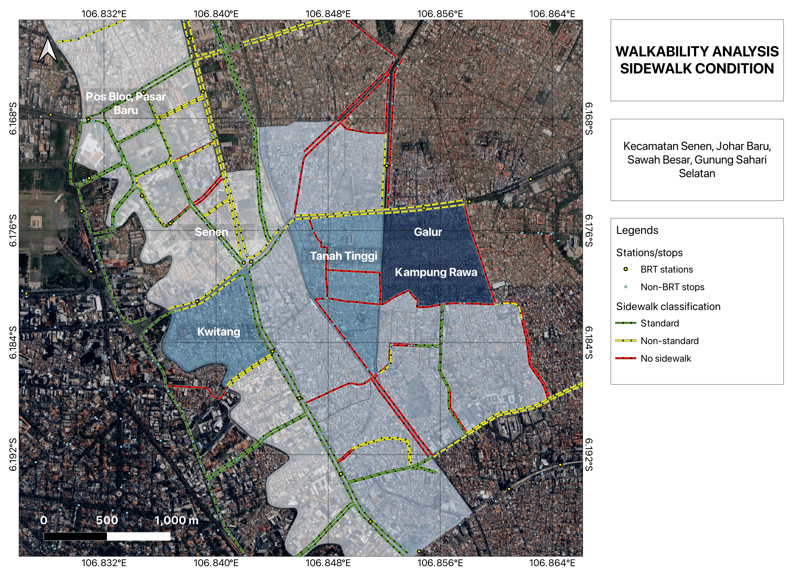

Transit in Jakarta Today
With over 240+ BRT stations, 250+ km of network, and 200+ routes, the system serves as the backbone of Jakarta's mobility. However, high-level connectivity does not always translate to local accessibility. This study audits the last mile inclusive infrastructure for vulnerable groups.

The share of area within a 500-meter radius of BRT stations reveals a stark disparity. While the Senen District enjoys 80.9% proximity coverage, the neighboring Johar Baru District is restricted to 20.3%. Most residents in Kelurahan Tanah Tinggi and Kampung Rawa must rely on Mikrotrans or non-BRT buses as they remain outside accessible, inclusive transit facilities.

Distance is not the only barrier; path quality is critical for wheelchair users. In Johar Baru, only 19% of the total population has access to BRT stations via truly walkable and standard-adhering paths. The district remains mostly inaccessible for those with mobility aids, as the standard sidewalk network is limited to a mere 1.2 km in Kelurahan Kwitang.

The audit utilized 22 distinct criteria, including ramp slopes (max 1:12), sidewalk net width (min 150 cm), and floor surface friction coefficients (> 0.6). Out of 49 stops evaluated, only 7 were found to be fully sheltered, lit, and equipped with standard benches and signage.
The Quality of Transit Facilities

The accessibility audit of Transjakarta bus stops highlights a significant gap between existing transit availability and the quality of wait-point infrastructure.
A majority of the identified stops are characterized by minimal signage, offering no physical protection or real-time information for passengers.
Critically, 4 stops lack even basic signage, rendering them functionally invisible to the broader transit network and difficult to navigate for new users.
These findings underscore the need for a targeted station-upgrading strategy.
By highlighting the 86% of stops currently lacking basic inclusive amenities, we provide a data-driven framework for stakeholders to transition from a quantity-based network to a quality-oriented, inclusive transit system.

The walkability audit reveals a critical infrastructure deficit within the study area, where the vast majority of the pedestrian network fails to meet basic accessibility standards.
A comprehensive geospatial assessment identified that only 1.2 km of the road network in Kelurahan Kwitang adheres to standard walkability and inclusivity parameters.
While Kelurahan Johar Baru owns 1.1 km of standard-measured sidewalks, the remaining target Kelurahan, Tanah Tinggi, Galur, and Kampung Rawa,
lack any standard-adherent walkable infrastructure entirely.
The absence of a continuous, inclusive sidewalk network effectively isolates high-density residential clusters from major transit arteries.
This break in the network chain represents a systemic failure that disproportionately impacts residents with mobility impairments,
necessitating immediate diplomatic engagement with regional planning authorities to prioritize sidewalk rehabilitation.
What's Next?
Advocating for better cities requires translating field evidence into strategic frameworks. Moving forward, the project focuses on shortlisting critical transit hotspots and engaging with transport authorities through technical briefings to refine proposed solutions. We aim to finalize a comprehensive report as a long-term advocacy tool for sustainable urban mobility.